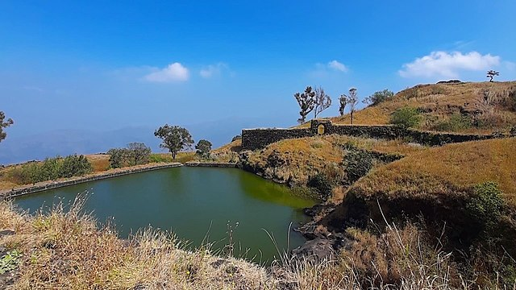
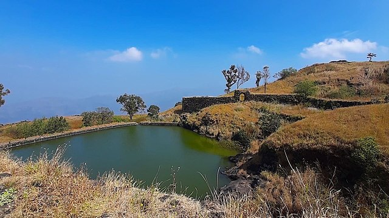

Rajgad
 

About
Rajgad Fort, located in the Pune district of Maharashtra, India, is a historic fort of great significance. It was built by Chhatrapati Shivaji Maharaj, the founder of the Maratha Empire, during the 17th century.
Rajgad Fort played a crucial role in the history of the Maratha Empire, serving as a strategic military stronghold and the capital for some time. It witnessed numerous battles and was a symbol of Maratha power and resilience.
Perched atop the Sahyadri mountain range, Rajgad Fort offers stunning panoramic views of the surrounding landscapes. It features impressive architectural structures such as palaces, temples, water reservoirs, and fortifications.
One of the notable events associated with Rajgad Fort is the historic meeting between Shivaji Maharaj and his trusted advisor, Tanaji Malusare, where they planned the famous conquest of the Kondhana Fort, now known as Sinhagad Fort.
Today, Rajgad Fort attracts tourists, trekkers, and history enthusiasts who visit to explore its rich heritage and experience its grandeur. The fort's historical significance, coupled with its scenic beauty, makes it a popular destination for nature lovers and history buffs alike.